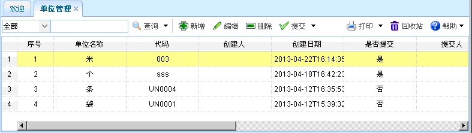

单位管理
单位管理
一、概述：单位管理主要是添加一些业务商品的标准单位。
二、流程图演示：如下图所示。
图表【流程图】
三、功能介绍：点击【单位管理】进入单位管理页面，如下图所示。功能包括：查询、新增、编辑、删除、提交。

图表4-19-1【单位管理】
图表4-19-1【单位管理】
【查询】：通过设置查询条件，查询出符合条件的单位管理信息。
【新增】：点击新增按钮，如下图所示。新增完毕，点击保存。其中灰色文本框为默认。
图表4-19-2【计量单位新增】
【编辑】：选中某项单位管理信息，点击编辑按钮后，出现如下图所示内容。进行编辑操作。其中灰色文本框为默认。
图表4-19-3【编辑】
【删除】：选中某项单位管理信息后，点击删除，即可删除该单位管理信息。
【提交】：选中某项单位管理信息后，点击提交，即可提交该单位管理信息。
 注意事项
注意事项
1、提交后不能再次进行编辑，如果需要进行编辑，提交人需撤消提交后，才能再次进行编辑。
常见问题
1、？
2、？
3、？